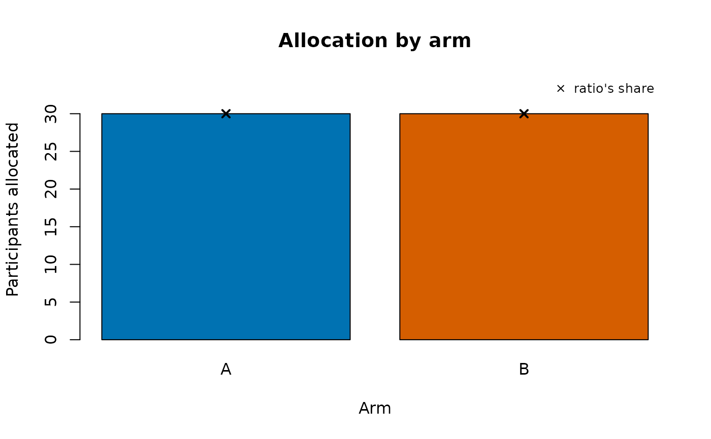

Allocates participants to arms by simple, permuted-block or stratified
block randomisation, from a seed through the package's NIST SP 800-90A
generator (drbgnew()), so the list can be regenerated exactly. It
returns the list and one SHA-256 commitment to it: sign and timestamp
the commitment before the first participant is enrolled, keep the list
and the seed with the unblinded statistician, and at unblinding
rallocvrf() shows that the allocation used is the one committed
to.
Arguments
- n
How many participants, a positive whole number. With
strata, it may be left out (it is their total).- arms
The arms' names, default
c("A", "B").- ratio
Whole numbers, one per arm: the allocation ratio, default equal.
- block
The block sizes to choose from at random, default
2 * sum(ratio)and3 * sum(ratio)(4 and 6 for two equal arms);NULLfor simple randomisation.- strata
NULL, or the strata and their numbers of places: a named vector of counts, or a data frame with the stratum columns andn.- seed
NULL(default, 48 random bytes), 48 raw bytes, their 96 hexadecimal characters, or a number or word that is expanded to 48 bytes.- codes
Give every participant a kit code, default
FALSE.- prefix
The start of the participant ids, default
"P".- x
A list from ralloc(), for
plot().- ...
Passed to the base plot.
Value
An object of class rmbl_alloc: a data frame with id,
stratum (with strata), block (the block's number in its stratum;
NA for simple randomisation), arm and, with codes, kit, in
enrolment order. Attribute "alloc" holds the settings, the seed (as
hexadecimal) and digest, the commitment. It prints as a box of
counts.
Details
Every draw is exact: an arm or a block size is chosen with rejection
sampling on 32-bit draws (no modulo bias), and a block is shuffled by
Fisher-Yates. With block = NULL each participant is allocated on
their own (simple randomisation), with probabilities in the ratio
ratio. Otherwise blocks are drawn one after another, each of a size
chosen at random from block (every size a multiple of sum(ratio)),
each holding the arms in the ratio; random block sizes keep the next
allocation hard to guess at a site. The list stops at n participants,
so its last block may be incomplete; the print-out says how far the
arms then differ.
With strata, each stratum has its own sequence of blocks: name the
strata and how many places each needs, as a named vector
(c(site1 = 40, site2 = 40)) or a data frame with the stratum
columns and a column n (one row per combination, such as site by
sex).
The commitment is the SHA-256 of the settings, every row of the list and
the SHA-256 of the seed, so it binds both the list and the seed: a list
edited afterwards, or a seed chosen afterwards to give a wanted list,
does not match it. Each field enters it with its length, so settings
that differ (a stratum named "x,y" against strata "x" and "y")
never share a commitment; lists made by 1.0.3's first release keep
their commitment and still verify. The print-out shows how many
participants each arm has, never who is in which arm, and not the seed.
Keep seed = NULL for a trial: the seed is then 48 bytes from the
operating system's generator (rndbytes()), which nobody can guess
before the list is opened. A number or a word as seed gives a list
anyone can recompute, which suits teaching and testing, not
concealment.
With codes = TRUE every participant also gets a kit code (six
characters, no look-alike letters or digits): sites and pharmacies are
given id and kit only, and the arm stays with the statistician.
Errors: fewer than two arms, repeated or empty arm names; a ratio
that is not one positive whole number per arm; a block size that is
not a positive multiple of sum(ratio) up to 1000000; n that is not
a whole number from 1 to 10000000, or that disagrees with the strata's
total; a seed that is not one value, or a raw seed that is not 48
bytes.
See also
rallocvrf() at unblinding;
cpssign() and
idcrd() to sign the commitment;
tsstmp() to timestamp it and
tsvrf() to check the timestamp;
prrgdecl() to declare the outcomes in the same signed record.
Examples
# 1:1 in blocks of 4 or 6, for 40 participants
a <- ralloc(40, seed = "teaching example")
a
#> ╭── Randomisation list ───────────────────────────────────────────────────────╮
#> │ Method permuted blocks of 4 or 6 │
#> │ Participants 40 │
#> │ Arms A, B (1:1) │
#> │ Strata none │
#> │ Kit codes no │
#> │ Seed concealed: attr(x, "alloc")$seed │
#> │ Commitment 200141beeb0d67c982e744cd58d544edc6fb54d061a7f522d93194d9f00 │
#> │ 493bf │
#> │ │
#> │ stratum A B │
#> │ ------- -- -- │
#> │ all 19 21 │
#> │ │
#> │ In all: A 19, B 21. The last block of a stratum is cut at its number of │
#> │ places, so a stratum can be a little off the ratio. │
#> │ Sign and timestamp the commitment before the first participant; keep the │
#> │ list and the seed with the unblinded statistician. │
#> ╰─────────────────────────────────────────────────────────────────────────────╯
attr(a, "alloc")$digest # sign and timestamp this first
#> [1] "200141beeb0d67c982e744cd58d544edc6fb54d061a7f522d93194d9f00493bf"
head(as.data.frame(a))
#> id block arm
#> 1 P-0001 1 A
#> 2 P-0002 1 B
#> 3 P-0003 1 A
#> 4 P-0004 1 B
#> 5 P-0005 2 A
#> 6 P-0006 2 B
# 2:1, stratified by site, with kit codes for the pharmacy
s <- ralloc(arms = c("drug", "placebo"), ratio = c(2, 1),
strata = c(Toronto = 30, Ottawa = 24), codes = TRUE,
seed = 7)
s
#> ╭── Randomisation list ───────────────────────────────────────────────────────╮
#> │ Method permuted blocks of 6 or 9 within strata │
#> │ Participants 54 │
#> │ Arms drug, placebo (2:1) │
#> │ Strata 2 │
#> │ Kit codes yes │
#> │ Seed concealed: attr(x, "alloc")$seed │
#> │ Commitment 36334e5fcde099ae6247061796e3f97aa50820fdcf45c90a3449dc8db5a │
#> │ 63e8c │
#> │ │
#> │ stratum drug placebo │
#> │ ------- ---- ------- │
#> │ Toronto 20 10 │
#> │ Ottawa 15 9 │
#> │ │
#> │ In all: drug 35, placebo 19. The last block of a stratum is cut at its │
#> │ number of places, so a stratum can be a little off the ratio. │
#> │ Sign and timestamp the commitment before the first participant; keep the │
#> │ list and the seed with the unblinded statistician. │
#> │ │
#> │ Give sites and the pharmacy only the id and kit columns. │
#> ╰─────────────────────────────────────────────────────────────────────────────╯
head(as.data.frame(s)[c("id", "kit")]) # what the sites are given
#> id kit
#> 1 P-0001 QARBDG
#> 2 P-0002 YYQG6Z
#> 3 P-0003 PK7MC2
#> 4 P-0004 6BABAP
#> 5 P-0005 KZTFQZ
#> 6 P-0006 T5G8AM
# simple randomisation: how many each arm has, against the ratio
plot(ralloc(60, block = NULL, seed = 1))

# at unblinding: the list is the one committed to
rallocvrf(a, digest = attr(a, "alloc")$digest)
#> ╭── Randomisation list: verified ─────────────────────────────────────────────╮
#> │ ✔ VERIFIED · 3 of 3 checks passed │
#> │ │
#> │ ✔ commitment the list is the one committed to │
#> │ ✔ seed the seed and the settings give this list, row for row │
#> │ ✔ participants 40 participants, each once │
#> │ commitment 200141beeb0d67c982e744cd58d544edc6fb54d061a7f522d93194 │
#> │ d9f00493bf │
#> ╰─────────────────────────────────────────────────────────────────────────────╯
# a block size the ratio does not divide
try(ralloc(30, block = 5))
#> Error : ralloc: every block size must be a positive multiple of 2, at most 1000000